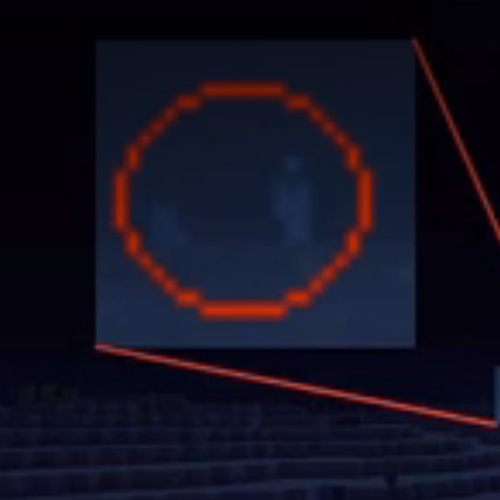

Status: NEAR CONTAINMENT
B-1, designated "The Hooded Death," is a cloaked humanoid entity with a concealed face, glowing red eyes, and a body structure comparable to that of an adult human male.

B-1 primarily targets individuals traveling toward the Far Lands, initiating its hunt approximately 1–5 hours before the subject reaches their destination.
The entity attacks by merging the target into their own shadow, immobilizing them before consuming the head. This results in immediate death.
The remaining body is consumed gradually over a period of 3–4 weeks.
B-1 exhibits a strong aversion to intense light sources, including fire and high-intensity flashes such as those produced by firearms.
B-1 is currently close to containment within a reinforced enclosure constructed from glowstone and netherrack, utilizing constant light emission to weaken the entity.